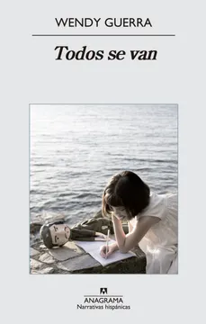

Todos se van
Wendy Guerra
De qué trata
Una novela de autoficción sobre la infancia y adolescencia en Cuba, narrada a través de los diarios que la autora escribía para su madre durante los períodos de separación. El formato íntimo transforma una vivencia personal y dolorosa en una obra sobre la libertad y el destino bajo un sistema que decide por las personas.
Por qué dialoga con Latinoamérica hoy
Wendy Guerra comenzó su carrera como escritora cuando era apenas una niña, escribiendo diarios para su madre. Durante un tiempo de separación física, ella le pidió que llevara un diario para contarle todo lo que sucedía mientras estaban lejos.
El ejercicio de registro cotidiano se convirtió, con el paso del tiempo, en la materia prima de la novela Todos se van. El diario no solo fue un vínculo con su madre, sino el origen de su voz literaria, transformando una vivencia íntima y dolorosa en una obra que explora su infancia y adolescencia en Cuba.
El formato de autoficción le permitió tomar su propia experiencia de vida y transformarla en una novela, cambiando nombre y recreando situaciones, mezclando elementos reales con ficción para proteger la narrativa y a los involucrados. Escribir esta novela fue, para la autora, un desahogo personal y creativo.